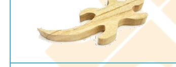
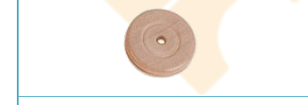
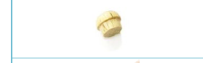
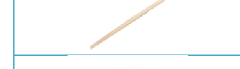
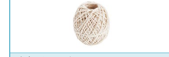

爬行高手教案
編號 03-P2-01 ・ 難度：中級
本教案以「爬行高手」爬蟲玩具為主題，透過鑽孔、砂磨、綁綑等技巧，讓孩子理解摩擦力與角度如何驅動爬蟲向上爬行，並融入動物保育與森林環境保護的情境故事，寓教於樂。

適合年級
5 歲以上（親子）
教學時間
60 分鐘
難度
中級
教學領域
S 科學・T 技術・E 工程・A 藝術・M 數學
教案類型
STEAM 親子創客教案
課程內容
摩擦力與角度原理介紹（S）・ 鑽孔、砂磨、鋸切、膠合技巧（T）・ 組裝與綁綑技巧（E）・ 塑型彩繪與模仿（A）・ 刻度概念（M）
課程流程
認識爬蟲構造與特徵 ・ 鋸切砂磨身體與鑽孔 ・ 木棒與棉線組裝 ・ 暖身爬一爬測試 ・ 彩繪美化 ・ 爬行高手比賽與討論
課程材料
身體 ×1（桃花心木） ・ 木輪子 ×1（桃花心木） ・ 木珠 ×2 ・ 木棒 ×1 ・ 棉線 ×1 條
其他材料與工具：砂紙、白膠或保麗龍膠、剪刀、鉛筆、橡皮擦、色筆、鑽孔機或手搖鑽、直徑 0.3 公分鑽頭、手工線鋸
延伸學習
動物保育與森林環境保護意識 ・ 爬蟲類生態觀察 ・ 繩索傳動與拉力原理生活應用
學習向度與目標
完整教學步驟
材料清單

身體
1 個
國產木材：桃花心木

木輪子
1 個
國產木材：桃花心木

木珠
2 個

木棒
1 支

棉線
1 條
其他材料與工具：砂紙、白膠或保麗龍膠、剪刀、鉛筆、橡皮擦、色筆、鑽孔機或手搖鑽、直徑 0.3 公分鑽頭、手工線鋸
情境引導
在奇異森林裡，住著一隻賽跑獲勝的爬蟲，天天吵著要兔子出來比賽。他發現森林裡的兔子因為人類的開發，早已經消失的無影無蹤了，沒想到爬蟲不死心，天天爬上爬下找尋好朋友兔子的蹤影，並告訴人們要保護森林環境，這樣兔子才有機會回到家鄉，世界也會更美好！今天我們來製作這隻強壯聰明的爬蟲，爬到高處宣導動物保育與愛護環境的重要性。
活動一：製作爬行高手
- 先選擇想製作的爬蟲生物，認識選定的爬蟲類，了解其構造與特徵。
- 依照選定爬蟲類的特徵，鋸切或砂磨爬蟲類身體的木片，並砂磨粗糙與銳利的邊緣。
- 在此爬蟲類前肢兩側約 1 公分處，各鑽 1 個往內斜向、0.3 公分的洞。
- 依照前肢兩個洞的距離，在木棒上方做相同距離的記號。並於木棒的中間也做記號，最後在記號上各鑽 1 個 0.3 公分的洞。
- 將棉繩剪成長約 50 公分 2 條、10 公分 1 條。
- 將 50 公分的棉線，分別穿過前肢，在約 5 公分的地方打結。
- 將 2 條線的另一端分別穿過木棒左右的洞，並將長約 10 公分的棉線穿過中間的洞並打結。
- 在此爬蟲的頭部位置，黏上 2 個木珠，當做眼睛。
- 若做的是烏龜，將木輪子黏於爬蟲身體的背部，當作背甲。
活動二：暖身爬一爬
- 將繩子一端固定於牆上或請人幫忙拉著，自己拉動前肢後方的繩子，讓此爬蟲爬行。
- 觀察此爬蟲爬行的情形，怎麼拉動繩子才能讓爬蟲向上爬呢？
- 試著調整拉力與掛住爬蟲繩子的鬆緊度，讓爬蟲可以順利向上或向前爬行。
活動三：美化
- 根據此爬蟲類的特徵，用色筆描繪，畫出牠獨特的花紋。
- 發揮創意，還能用什麼素材表現牠的特徵呢？
- 使用剉刀或是砂磨工具，塑型其特徵。
- 想一想，你的爬蟲吃什麼呢？描繪在圖畫紙上，再黏於在木棒上。
活動四：誰是爬行高手？
- 比一比，看誰的爬蟲爬得最快？
活動五：討論
- 說說看，洞和繩子是利用什麼原理讓爬蟲爬上去的？
- 根據你的作品，分享你的爬蟲有什麼特色？
注意事項
- 使用線鋸、剉刀等工具時，要戴好護目鏡、手套等護具，並聽從大人的指示，千萬不可讓孩子自行操作，以免發生危險。
- 在比賽時，要注意爬蟲掉下來可能打到其他人。
- 在塑型特徵的時候，可以使用砂紙包覆木棒或小木塊，製作成塑型工具。砂磨時要注意避免手不小心被磨到。